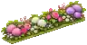
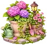
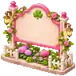
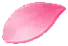

← Return to Town V6Painted gardens, a living 3D town.
These generated illustrations now sit alongside the real houses, furniture, and residents. Garden cards face the camera, while the cottage keeps its 3D cutaway and working sofa. Choose an image to open its transparent runtime texture.

Flowering border
Repeated along garden margins without blocking gates or sidewalks.

Porch planter
A small illustrated accent anchored inside each lot.

Garden noticeboard
A decorative sign beside the cafe and parks. It has no hidden interaction or baked lettering.
Rose and clover
Transparent ornament for the welcome and property cards.

Painted petal
A cropped element from the generated effects sheet, animated by the game's simulation clock.
Town V6 mixed-media batch. These lightweight runtime textures are deliberately small; they are not the full-resolution source illustrations. Original PNGs remain in the downloaded thread art kit. These are decorative assets, not a replacement for playable 3D geometry. The mixed-media layer and drifting petals can be disabled independently in Town's help panel.